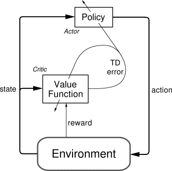

强化学习
引言
强化学习 (Reinforcement Learning, RL) 是机器学习的一个重要分支，研究智能体 (Agent) 如何在与环境的交互中通过试错学习最优行为策略。它是机器人自主决策和技能学习的核心方法之一。
基本原理
强化学习是通过奖励函数的一种探索式学习方法。其原理如下图所示：

在每个时间步 ，智能体观察当前状态 ，根据策略 选择动作 ，环境返回奖励 并转移到新状态 。智能体的目标是学习一个策略，使得累积奖励最大化。
马尔可夫决策过程 (MDP)
强化学习问题通常被形式化为马尔可夫决策过程 (Markov Decision Process, MDP)，由一个五元组定义：
其中：
- 是状态空间 (State Space)
- 是动作空间 (Action Space)
- 是状态转移概率 (Transition Probability)：在状态 执行动作 后转移到状态 的概率
- 是奖励函数 (Reward Function)：执行动作后获得的即时奖励
- 是折扣因子 (Discount Factor)：平衡即时奖励与长期收益
MDP 的核心假设是马尔可夫性 (Markov Property)：下一个状态只依赖于当前状态和动作，与历史无关。
价值函数 (Value Functions)
价值函数衡量在特定状态（或状态-动作对）下，按照某策略行动所能获得的期望累积奖励。
状态价值函数 (State Value Function)：
动作价值函数 (Action Value Function, Q-Function)：
最优价值函数满足贝尔曼最优方程 (Bellman Optimality Equation)：
算法分类
强化学习算法可以从多个维度进行分类：
基于模型 vs 无模型 (Model-based vs Model-free)
- 基于模型的方法 (Model-based)：学习或利用环境的动力学模型 ，通过模型进行规划。样本效率高，但模型不准确时可能导致性能下降。代表算法有 Dyna-Q、MBPO、Dreamer。
- 无模型的方法 (Model-free)：直接从经验中学习策略或价值函数，不需要环境模型。样本效率较低但更加通用。大多数主流算法属于此类。
在线策略 vs 离线策略 (On-policy vs Off-policy)
- 在线策略 (On-policy)：使用当前策略生成的数据来更新策略。数据不能重复利用，样本效率较低。代表算法有 SARSA、A3C、PPO。
- 离线策略 (Off-policy)：可以使用由其他策略生成的历史数据来更新当前策略。通过经验回放 (Experience Replay) 机制提高样本效率。代表算法有 Q-learning、DQN、DDPG、SAC。
基于价值 vs 基于策略 vs 演员-评论家 (Value-based vs Policy-based vs Actor-Critic)
- 基于价值的方法 (Value-based)：学习价值函数，策略由价值函数隐式导出（如选择最大 Q 值的动作）。适合离散动作空间。代表算法有 Q-learning、DQN。
- 基于策略的方法 (Policy-based)：直接参数化策略并通过梯度上升优化。适合连续动作空间。代表算法有 REINFORCE。
- 演员-评论家方法 (Actor-Critic)：结合价值方法和策略方法的优势。演员 (Actor) 学习策略，评论家 (Critic) 学习价值函数。代表算法有 A3C、PPO、SAC、TD3。
策略梯度方法 (Policy Gradient)
策略梯度方法直接优化参数化策略 ，使得期望累积奖励最大化。策略梯度定理 (Policy Gradient Theorem) 给出了梯度的表达式：
为了降低梯度估计的方差，通常引入基线函数 (Baseline)，将 替换为优势函数 (Advantage Function)：
近端策略优化 (Proximal Policy Optimization, PPO) 是目前最流行的策略梯度算法之一，通过限制策略更新幅度来保证训练稳定性。
常见强化学习算法
常见的强化学习方法有 [1]：
| Algorithm | Description | Policy | Action Space | State Space | Operator |
|---|---|---|---|---|---|
| Monte Carlo | Every visit to Monte Carlo | Either | Discrete | Discrete | Sample-means |
| Q-learning | State–action–reward–state | Off-policy | Discrete | Discrete | Q-value |
| SARSA | State–action–reward–state–action | On-policy | Discrete | Discrete | Q-value |
| Q-learning - Lambda | State–action–reward–state with eligibility traces | Off-policy | Discrete | Discrete | Q-value |
| SARSA - Lambda | State–action–reward–state–action with eligibility traces | On-policy | Discrete | Discrete | Q-value |
| DQN | Deep Q Network | Off-policy | Discrete | Continuous | Q-value |
| DDPG | Deep Deterministic Policy Gradient | Off-policy | Continuous | Continuous | Q-value |
| A3C | Asynchronous Advantage Actor-Critic Algorithm | On-policy | Continuous | Continuous | Advantage |
| NAF | Q-Learning with Normalized Advantage Functions | Off-policy | Continuous | Continuous | Advantage |
| TRPO | Trust Region Policy Optimization | On-policy | Continuous | Continuous | Advantage |
| PPO | Proximal Policy Optimization | On-policy | Continuous | Continuous | Advantage |
| TD3 | Twin Delayed Deep Deterministic Policy Gradient | Off-policy | Continuous | Continuous | Q-value |
| SAC | Soft Actor-Critic | Off-policy | Continuous | Continuous | Advantage |
深度强化学习 (Deep Reinforcement Learning)
深度强化学习将深度神经网络与强化学习结合，使其能够处理高维状态和动作空间。
DQN (Deep Q-Network)
DQN 使用深度神经网络近似 Q 值函数，引入了两个关键技术：
- 经验回放 (Experience Replay)：将交互数据存储在缓冲区中，随机采样进行训练，打破数据之间的时序相关性
- 目标网络 (Target Network)：使用参数延迟更新的目标网络计算 TD 目标，提高训练稳定性
PPO (Proximal Policy Optimization)
PPO 通过裁剪 (Clipping) 策略比率来限制每次更新的幅度，避免策略剧变：
其中 是策略比率， 是裁剪范围。PPO 实现简单、性能稳定，是目前应用最广泛的深度强化学习算法之一。
SAC (Soft Actor-Critic)
SAC 在最大化累积奖励的同时，还最大化策略的熵 (Entropy)，鼓励探索：
其中 是温度参数， 是熵。SAC 在连续控制任务中表现出色，训练稳定性好。
Stable Baselines3 完整代码示例
Stable Baselines3 (SB3) 是基于 PyTorch 的高质量强化学习算法库，提供统一的接口和易于使用的训练流程。以下示例展示如何使用 PPO 训练倒立摆控制任务。
安装与训练
import gymnasium as gym
from stable_baselines3 import PPO, SAC
from stable_baselines3.common.env_util import make_vec_env
# 使用 PPO 训练倒立摆
env_id = "Pendulum-v1"
env = make_vec_env(env_id, n_envs=4) # 4个并行环境
model = PPO(
policy="MlpPolicy",
env=env,
learning_rate=3e-4,
n_steps=2048,
batch_size=64,
n_epochs=10,
gamma=0.99,
gae_lambda=0.95,
clip_range=0.2,
verbose=1,
)
model.learn(total_timesteps=100_000)
model.save("ppo_pendulum")
# 评估
obs, _ = env.reset()
for _ in range(1000):
action, _ = model.predict(obs, deterministic=True)
obs, reward, done, truncated, info = env.step(action)
使用 SAC 训练连续控制任务
对于样本效率要求更高的场景，可以使用离线策略算法 SAC。SAC 支持经验回放，每一步环境交互后都可进行多次梯度更新：
from stable_baselines3 import SAC
from stable_baselines3.common.evaluation import evaluate_policy
# SAC 适合连续动作空间，样本效率高于 PPO
model_sac = SAC(
policy="MlpPolicy",
env="HalfCheetah-v4",
learning_rate=3e-4,
buffer_size=1_000_000,
learning_starts=10_000,
batch_size=256,
tau=0.005,
gamma=0.99,
train_freq=1,
gradient_steps=1,
verbose=1,
)
model_sac.learn(total_timesteps=500_000)
# 定量评估：运行10个回合取平均奖励
mean_reward, std_reward = evaluate_policy(model_sac, model_sac.get_env(), n_eval_episodes=10)
print(f"平均奖励: {mean_reward:.2f} ± {std_reward:.2f}")
自定义回调函数
SB3 的回调 (Callback) 机制允许在训练过程中插入自定义逻辑，例如保存最佳模型或提前停止：
from stable_baselines3.common.callbacks import EvalCallback, StopTrainingOnRewardThreshold
# 达到奖励阈值时停止训练
stop_callback = StopTrainingOnRewardThreshold(reward_threshold=-200, verbose=1)
eval_callback = EvalCallback(
eval_env=make_vec_env("Pendulum-v1", n_envs=1),
callback_on_new_best=stop_callback,
eval_freq=5000,
best_model_save_path="./best_model/",
verbose=1,
)
model.learn(total_timesteps=200_000, callback=eval_callback)
Isaac Lab 机器人训练示例
NVIDIA Isaac Lab 是专为大规模机器人强化学习设计的 GPU 加速仿真框架，支持数千个并行环境同步运行，大幅缩短训练时间。
环境类结构
Isaac Lab 中的任务环境继承自 DirectRLEnv 或 ManagerBasedRLEnv，需要实现以下核心方法：
from isaaclab.envs import DirectRLEnv, DirectRLEnvCfg
import torch
class HumanoidLocomotionEnv(DirectRLEnv):
cfg: DirectRLEnvCfg
def __init__(self, cfg, render_mode=None, **kwargs):
super().__init__(cfg, render_mode, **kwargs)
# 初始化关节目标、奖励缓冲区等
self._joint_dof_idx, _ = self.robot.find_joints(".*")
self.action_scale = 0.5
def _get_observations(self) -> dict:
# 收集观测：关节位置、速度、基座姿态、IMU数据
obs = torch.cat([
self.robot.data.joint_pos[:, self._joint_dof_idx], # 关节位置
self.robot.data.joint_vel[:, self._joint_dof_idx], # 关节速度
self.robot.data.root_lin_vel_b, # 基座线速度（机体系）
self.robot.data.root_ang_vel_b, # 基座角速度
self.robot.data.projected_gravity_b, # 投影重力方向
self.commands[:, :3], # 速度指令
], dim=-1)
return {"policy": obs}
def _get_rewards(self) -> torch.Tensor:
# 组合多项奖励
alive_reward = 1.0 * (~self.reset_terminated).float()
vel_tracking = self._reward_velocity_tracking()
energy_penalty = self._penalty_energy()
contact_penalty = self._penalty_contact_forces()
return alive_reward + vel_tracking + energy_penalty + contact_penalty
观测空间设计
运动控制任务的观测通常包含以下分量：
| 观测分量 | 维度 | 说明 |
|---|---|---|
| 关节位置 | 各关节当前角度（减去默认角度） | |
| 关节速度 | 各关节角速度 | |
| 基座线速度 | 3 | 机体坐标系下的 |
| 基座角速度 | 3 | 机体坐标系下的滚转/俯仰/偏航角速度 |
| 投影重力 | 3 | 重力向量在机体系的投影，隐式编码姿态 |
| 速度指令 | 3 | 目标前向速度、侧向速度、偏航速率 |
| 上一步动作 | 提供动作历史信息，有助于平滑控制 |
奖励函数定义
def _reward_velocity_tracking(self) -> torch.Tensor:
# 跟踪目标线速度：使用指数核函数
lin_vel_error = torch.sum(
(self.commands[:, :2] - self.robot.data.root_lin_vel_b[:, :2]) ** 2, dim=1
)
return torch.exp(-lin_vel_error / 0.25) * 1.0
def _penalty_energy(self) -> torch.Tensor:
# 能量惩罚：抑制关节扭矩过大
return -torch.sum(
torch.abs(self.robot.data.applied_torque[:, self._joint_dof_idx]), dim=1
) * 0.0002
def _penalty_contact_forces(self) -> torch.Tensor:
# 碰撞惩罚：防止非预期肢体接触地面
net_contact = torch.norm(
self.contact_sensor.data.net_forces_w[:, self.undesired_contact_body_ids, :], dim=-1
)
return -torch.sum((net_contact > 1.0).float(), dim=1) * 0.1
域随机化参数
域随机化 (Domain Randomization) 是 Sim-to-Real 迁移的关键，Isaac Lab 通过配置类统一管理：
from isaaclab.utils.noise import AdditiveGaussianNoiseCfg, UniformNoiseCfg
randomization_cfg = dict(
# 物理参数随机化
physics_material=dict(
static_friction=(0.6, 1.2),
dynamic_friction=(0.4, 0.9),
restitution=(0.0, 0.1),
),
# 关节参数随机化
joint_stiffness=(0.8, 1.2), # 相对额定值的倍率范围
joint_damping=(0.8, 1.2),
# 观测噪声
obs_noise=AdditiveGaussianNoiseCfg(mean=0.0, std=0.02),
# 外力扰动
push_robot=dict(interval_s=5.0, magnitude=(0.0, 1.0)),
)
训练启动与真机部署
# 在 Isaac Lab 根目录下启动训练（4096 并行环境）
python scripts/reinforcement_learning/rsl_rl/train.py \
--task=Isaac-Velocity-Rough-Anymal-C-v0 \
--num_envs=4096 \
--headless
# 导出策略为 ONNX 格式用于真机推理
python scripts/reinforcement_learning/rsl_rl/export_onnx.py \
--task=Isaac-Velocity-Rough-Anymal-C-v0 \
--checkpoint=logs/rsl_rl/anymal_c_rough/model_5000.pt
训练完成后，将导出的 ONNX 模型部署到机器人的实时控制器上，通常以 400–1000 Hz 的频率运行策略推理。
模仿学习 (Imitation Learning)
模仿学习 (Imitation Learning, IL) 让智能体通过学习专家示范来习得技能，无需手动设计奖励函数。这在机器人操作任务中尤为实用，因为奖励函数往往难以精确定义。
行为克隆 (Behavioral Cloning, BC)
行为克隆将模仿学习转化为监督学习问题，直接从专家数据 中学习映射策略：
BC 实现简单，但存在复合误差 (Compounding Error) 问题：训练时智能体只见到专家状态分布，测试时一旦偏离专家轨迹就会进入未见过的状态，错误不断累积。
DAgger (Dataset Aggregation)
DAgger 是解决复合误差问题的交互式模仿学习算法。其核心思想是让当前策略在线执行，再由专家对访问到的状态进行标注，从而逐步扩充训练数据集覆盖的状态分布：
其中 是当前策略 诱导的状态分布， 是专家策略。每次迭代后重新训练策略，循环执行直至收敛。
GAIL (Generative Adversarial Imitation Learning)
生成对抗模仿学习 (GAIL) 借鉴生成对抗网络 (Generative Adversarial Network, GAN) 思想，同时学习奖励函数和策略：判别器 区分智能体轨迹与专家轨迹，策略 则试图生成无法被判别器识别的轨迹：
GAIL 无需显式奖励函数，能从少量专家数据中学习复杂行为，但训练稳定性较差。
机器人操作中的应用
在机器人操作任务中，模仿学习的典型流程如下：
- 遥操作数据采集：使用力反馈手套、VR 控制器或示教器，由操作员控制机械臂完成目标任务，记录状态-动作序列。
- 数据预处理：统一时间步长，进行动作平滑和异常帧过滤。
- 策略训练：使用 BC 快速得到初始策略，再用 DAgger 或强化学习进行微调。
- 真机验证：在真实机器人上评估成功率，采集失败案例补充到训练集中迭代改进。
近年来，基于 Transformer 的行为克隆方法（如 ACT、Diffusion Policy）在机器人操作上取得了显著进展，能够处理多模态动作分布。
分层强化学习 (Hierarchical RL)
分层强化学习 (Hierarchical Reinforcement Learning, HRL) 将复杂的长时序任务分解为多个层次，不同层次的策略负责不同时间尺度的决策。
选项框架 (Options Framework)
选项 (Option) 是一种时间扩展的动作，由三元组定义：
其中 是启动条件， 是选项内部策略， 是终止条件。高层策略在选项层面进行决策，低层策略执行具体的电机控制。
高层策略与低层策略
典型的两层 HRL 架构如下：
- 高层策略（任务规划器）：以较低频率运行（如每 5–10 步执行一次），输出子目标 (Sub-goal) 或技能索引，负责长时序规划。
- 低层策略（技能控制器）：以高频运行（如每步执行一次），将子目标转化为具体的关节力矩或末端执行器速度。
HRL 在机器人中的优势
HRL 特别适合以下场景：
- 长时序操作任务：例如"拿起杯子放到托盘上再送到桌边"，高层分解为拾取、放置、导航等子任务，低层执行各子任务的轨迹。
- 技能组合与复用：训练好的低层技能（如"抓取"、"行走"）可以被不同的高层策略复用，提高学习效率。
- 课程学习 (Curriculum Learning)：先学习子任务，再学习组合，降低整体任务难度。
代表性工作包括 HIRO（分层强化学习中的数据高效方法）和 HAC（分层演员-评论家），它们均采用目标条件策略作为低层控制器。
离线强化学习 (Offline RL)
离线强化学习 (Offline Reinforcement Learning) 完全从静态数据集中学习策略，不与环境产生任何新的交互。这一范式对机器人领域尤为重要，因为真实机器人的数据采集代价高昂且存在安全隐患。
为什么需要离线强化学习
在线强化学习要求大量的环境交互，对机器人而言存在以下问题：
- 高成本：数百万次交互意味着机器人持续运行数天甚至数周
- 安全风险：探索阶段的随机动作可能损坏机器人或周围设备
- 不可复现性：真实世界条件随时间变化，难以保证训练的一致性
离线强化学习利用历史数据（遥操作记录、演示数据、已有策略的运行日志），在不与环境交互的情况下提取有价值的行为。
分布外 (Out-of-Distribution) 问题
离线强化学习的核心挑战是分布偏移 (Distribution Shift)：Q 函数在训练时只见过数据集中的状态-动作对，但贪心策略可能选择数据集中未曾出现的动作，导致 Q 值被过高估计。
保守 Q 学习 (Conservative Q-Learning, CQL)
CQL 通过在损失函数中加入正则项，压低数据集外动作的 Q 值，同时提高数据集内动作的 Q 值：
其中 是用于最大化 Q 值的策略， 是贝尔曼算子。
隐式 Q 学习 (Implicit Q-Learning, IQL)
IQL 完全避免在数据集外查询 Q 值，通过期望回归（而非最大化）来隐式提取最优策略，训练更加稳定，在 D4RL 基准上表现出色。
TD3+BC
TD3+BC 是对 TD3 算法的简单修改，在策略更新目标中加入行为克隆正则项：
其中 平衡 Q 值最大化与对数据集动作的模仿。TD3+BC 实现极为简洁，性能却与复杂方法相当。
多智能体强化学习 (MARL)
多智能体强化学习 (Multi-Agent Reinforcement Learning, MARL) 研究多个智能体在共享环境中的协同或竞争学习问题，在多机器人协调、无人机编队等任务中有重要应用。
合作 vs 竞争 (Cooperative vs Competitive)
- 完全合作：所有智能体共享同一奖励函数，目标是最大化团队总收益。典型场景：多机器人协作搬运、仓储调度。
- 完全竞争（零和博弈）：一方收益等于另一方损失。典型场景：机器人对抗赛。
- 混合设置：智能体之间既有合作也有竞争，如多支队伍的团队对抗。
集中训练分散执行 (CTDE)
集中训练分散执行 (Centralized Training with Decentralized Execution, CTDE) 是多智能体强化学习的主流范式：
- 训练阶段：使用集中式评论家，允许访问全局状态和其他智能体的观测与动作，提供更准确的价值估计。
- 执行阶段：每个智能体仅依赖自身局部观测进行决策，满足分布式部署的要求。
MADDPG
多智能体深度确定性策略梯度算法 (Multi-Agent Deep Deterministic Policy Gradient, MADDPG) 将 CTDE 范式应用于连续动作空间：每个智能体 拥有独立的演员 ，但评论家 接受所有智能体的联合观测和动作：
其中 是全局状态， 是智能体 的局部观测。
多机器人协调应用
- 无人机编队飞行：多架无人机通过 MARL 学习保持队形、避碰和协同完成侦察任务
- 多臂协作操作：两臂机器人（双臂机器人）通过协作强化学习完成需要双手配合的组装任务
- 仓库物流调度：多 AGV（自动导引车）在同一空间内协作完成货物搬运，避免死锁
奖励函数设计
奖励函数是强化学习的核心，直接决定智能体的学习目标。设计良好的奖励函数是机器人强化学习成功的关键因素之一。
稀疏奖励 vs 稠密奖励
稀疏奖励 (Sparse Reward)：仅在任务成功时给予奖励（如 +1），其他时刻奖励为零。优点是目标清晰，不引入人为偏差；缺点是在长时序任务中信号极其稀疏，智能体几乎无法从随机探索中获得正反馈。
稠密奖励 (Dense Reward)：在每个时间步都提供连续的奖励信号，引导智能体向目标靠近。优点是学习信号充足，收敛速度快；缺点是需要仔细设计，容易引入非预期行为。
奖励塑形定理 (Reward Shaping Theorem)
Ng 等人证明，若塑形奖励 满足势函数 (Potential-based) 形式：
则原 MDP 与添加塑形奖励后的 MDP 具有相同的最优策略，即势函数形式的奖励塑形不改变最优解。
运动控制奖励设计
腿足机器人运动控制任务中，常用奖励分量如下：
| 奖励项 | 公式 | 目的 |
|---|---|---|
| 速度跟踪 | 跟踪目标速度指令 | |
| 倒地惩罚 | 防止机器人摔倒 | |
| 能量效率 | (-\sum | \tau_i \dot{q}_i |
| 动作平滑 | 产生平滑的关节轨迹 | |
| 姿态保持 | 保持躯干直立 | |
| 足端碰撞 | 防止非足端接触地面 |
操作任务奖励设计
机械臂操作任务中，常用奖励分量包括：
- 距离奖励：末端执行器到目标物体的距离 ，引导机械臂靠近目标
- 抓取成功：成功抓起物体时给予正奖励，通常配合接触力检测
- 力限制：惩罚过大的接触力，防止损坏物体或机械臂
- 目标完成：任务成功时的稀疏正奖励，作为最终目标信号
奖励黑客与规格博弈
奖励黑客 (Reward Hacking)：智能体找到意料之外的方式来最大化奖励，而不是完成预期任务。例如，为了最大化速度奖励，机器人可能学会翻滚而非行走；为了最小化能量惩罚，机器人可能完全不动。
规格博弈 (Specification Gaming)：更广义的问题，智能体利用奖励函数定义的不完整性或漏洞来获得高奖励。防范措施包括：
- 多维度奖励约束（既要完成任务，又要满足安全约束）
- 人类反馈强化学习 (Reinforcement Learning from Human Feedback, RLHF)，用人类偏好替代手动设计的奖励
- 逆强化学习 (Inverse Reinforcement Learning, IRL)，从专家行为中推断奖励函数
仿真到现实迁移 (Sim-to-Real)
仿真到现实迁移 (Sim-to-Real Transfer) 是将仿真环境中训练的策略部署到真实机器人的过程。仿真与现实之间的差距（现实差距，Reality Gap）是 Sim-to-Real 的核心挑战。
域随机化调度 (Progressive Domain Randomization)
渐进式域随机化策略在训练初期使用较小的随机化范围，随训练进行逐步扩大，帮助策略先学会基本任务再增强鲁棒性：
| 训练阶段 | 摩擦系数范围 | 质量范围 | 外力扰动 |
|---|---|---|---|
| 初期（0–30%） | ±10% | ±5% | 关闭 |
| 中期（30–70%） | ±30% | ±20% | 弱扰动 |
| 后期（70–100%） | ±50% | ±40% | 强扰动 |
系统辨识 (System Identification)
系统辨识 (System Identification, SysID) 通过测量真实机器人的响应数据，估计物理参数（如关节刚度、质心位置、电机延迟），从而缩小仿真与现实的差距。常用方法包括：
- 轨迹优化辨识：给机器人施加一组激励动作，记录关节力矩和位置，通过最小化预测误差拟合仿真参数
- 卡尔曼滤波估计：在线实时估计系统参数，适合参数随时间变化的场景
特权信息与师生蒸馏
训练阶段，教师策略 (Teacher Policy) 可以访问仿真中精确的物理状态（如地形高度图、接触力、摩擦系数），这些信息在真实世界中不可测量。师生蒸馏 (Teacher-Student Distillation) 分两阶段进行：
- 教师训练：在仿真中，教师策略使用特权信息训练，得到高性能基准策略。
- 学生蒸馏：学生策略仅使用可观测的传感器数据（如 IMU、关节编码器），通过行为克隆模仿教师动作，同时结合强化学习进行微调。
代表性工作包括 ETH Zurich 的 ANYmal 和 CMU 的人形机器人研究，均采用此框架实现了出色的 Sim-to-Real 迁移效果。
真机部署后的自适应
即使经过充分的域随机化，部署到真实机器人时仍可能面临未预期的环境。常用的真机自适应方法包括：
- 在线系统辨识：在机器人运行过程中持续更新物理参数估计，快速适应新环境
- 元强化学习 (Meta-RL)：训练时暴露策略于多种任务变体，使策略能在少量真实数据下快速适应
- 实域微调：以仿真训练权重为初始值，在真机上进行少量在线强化学习更新
强化学习在机器人中的应用
强化学习为机器人提供了从经验中学习复杂技能的能力，主要应用领域包括：
灵巧操作 (Dexterous Manipulation)
训练机械臂和灵巧手完成抓取、插入、装配等操作任务。典型工作包括 OpenAI 训练灵巧手旋转魔方。关键挑战在于高维动作空间和精确的力控制。
运动控制 (Locomotion)
训练腿足机器人（如四足机器人、双足机器人）在各种地形上行走、跑步和跳跃。通过仿真到现实迁移，在仿真环境中训练策略并部署到真实机器人。
自主导航 (Autonomous Navigation)
训练移动机器人在未知或动态环境中避障和寻路。强化学习可以学习端到端 (End-to-End) 的导航策略，直接从传感器输入映射到运动指令。
基准测试环境
标准化的基准环境是比较算法性能、验证新方法的重要工具。以下是机器人强化学习领域常用的基准测试环境：
| 环境 | 说明 | 适用算法 |
|---|---|---|
| Gymnasium MuJoCo | Ant、HalfCheetah、Hopper 等经典连续控制任务 | SAC、TD3、PPO |
| Isaac Lab | 人形机器人运动、四足运动、操作等大规模 GPU 并行训练 | PPO |
| dm_control | DeepMind 基于 MuJoCo 的物理控制套件，任务多样 | SAC、DDPG |
| robosuite | 机械臂操作基准，含多种抓取和组装任务 | BC、GAIL |
| MetaWorld | 50 种操作任务，支持多任务和元学习评估 | SAC、多任务 RL |
| D4RL | 离线强化学习标准数据集，包含运动和操作数据 | CQL、IQL、TD3+BC |
| SMAC | 星际争霸多智能体挑战，常用于合作 MARL 评估 | QMIX、MAPPO |
MuJoCo 环境快速上手
import gymnasium as gym
import numpy as np
# 创建 HalfCheetah 环境
env = gym.make("HalfCheetah-v4", render_mode="human")
obs, info = env.reset(seed=42)
for _ in range(1000):
# 随机动作（真实训练时替换为策略输出）
action = env.action_space.sample()
obs, reward, terminated, truncated, info = env.step(action)
if terminated or truncated:
obs, info = env.reset()
env.close()
常用框架与工具
| 框架/工具 | 特点 |
|---|---|
| Stable Baselines3 | 基于 PyTorch 的高质量 RL 算法实现（PPO、SAC、TD3 等），接口统一 |
| RLlib (Ray) | 分布式强化学习库，支持大规模并行训练 |
| Gymnasium (原 OpenAI Gym) | 标准化的 RL 环境接口，大量预置环境 |
| Isaac Gym / Isaac Lab | NVIDIA 推出的 GPU 加速物理仿真环境，适合大规模机器人 RL 训练 |
| MuJoCo | 高精度物理仿真引擎，常用于连续控制任务的基准测试 |
| dm_control | DeepMind 基于 MuJoCo 的控制任务套件 |
| RSL-RL | ETH Zurich 专为腿足机器人设计的轻量 RL 框架，与 Isaac Lab 深度集成 |
| CleanRL | 单文件实现的教学级 RL 代码库，适合理解算法细节 |
参考资料
- Reinforcement learning. Wikipedia. https://en.wikipedia.org/wiki/Reinforcement_learning
- Sutton, R. S. & Barto, A. G. (2018). Reinforcement Learning: An Introduction (2nd ed.). MIT Press. 在线版本
- Schulman, J., et al. (2017). Proximal Policy Optimization Algorithms. arXiv:1707.06347.
- Haarnoja, T., et al. (2018). Soft Actor-Critic: Off-Policy Maximum Entropy Deep Reinforcement Learning with a Stochastic Actor. ICML 2018.
- Zhao, W., et al. (2020). Sim-to-Real Transfer in Deep Reinforcement Learning for Robotics: a Survey. arXiv:2009.13303.
- Kumar, A., et al. (2020). Conservative Q-Learning for Offline Reinforcement Learning. NeurIPS 2020.
- Kostrikov, I., et al. (2021). Offline Reinforcement Learning with Implicit Q-Learning. ICLR 2022.
- Fujimoto, S. & Gu, S. S. (2021). A Minimalist Approach to Offline Reinforcement Learning. NeurIPS 2021. (TD3+BC)
- Ho, J. & Ermon, S. (2016). Generative Adversarial Imitation Learning. NeurIPS 2016.
- Ross, S., et al. (2011). A Reduction of Imitation Learning and Structured Prediction to No-Regret Online Learning. AISTATS 2011. (DAgger)
- Lowe, R., et al. (2017). Multi-Agent Actor-Critic for Mixed Cooperative-Competitive Environments. NeurIPS 2017. (MADDPG)
- Kumar, V., et al. (2021). RMA: Rapid Motor Adaptation for Legged Robots. RSS 2021. (师生蒸馏)
- Ng, A. Y., et al. (1999). Policy Invariance Under Reward Transformations: Theory and Application to Reward Shaping. ICML 1999.
- Raffin, A., et al. (2021). Stable-Baselines3: Reliable Reinforcement Learning Implementations. JMLR 22(268).
- Mittal, M., et al. (2023). Orbit: A Unified Simulation Framework for Interactive Robot Learning Environments. IEEE RA-L. (Isaac Lab 前身)